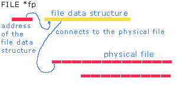

|
Development |

|
|
Sequential Text Files Create C programs to implement solutions using sequential text files. Bytes | Format | Access | Connecting | Opening | Closing | Writing To Reading From | Rewinding | End of File | File I/O vs Std I/O | In-Class Practice | Exercises A file is a named area of secondary storage. Secondary storage is permanent. Unlike the contents of primary memory, which is volatile, the contents of a file is accessible after we have turned the power off and back on at a later time. A file is not necessarily stored contiguously on a secondary storage device. The file may be fragmented. The operating system controls the fragmentation, if any.
Bytes The fundamental unit of a file is a byte. We say that a file is a stream of bytes. A file concludes with a special mark called the end of file mark. This mark is defined as EOF, typically with a value of -1. Under the C standard, the end of file mark may be any negative integer value. Format We store data in a file in either of two formats:
In text format, the data on the file is in a form that we can display and modify using a text editor. The data on the file is a translated form of the data stored in primary memory. In text format, we introduce some approximation. For instance, consider the floating-point number 12.345678901234 stored as a double in memory. Let us convert this value using the %.2lf specifier. The converted value is 12.35. This is the value that we might store on the file. If subsequently we read 12.35 from the file under the %lf conversion specifier, we store the value in primary memory as 12.350000000000. The value stored in primary memory is clearly different from the original 12.345678901234! In other words, although with text format we do gain the ability to edit text we also lose accuracy with floating point numbers. Aside from readability, another advantage of text format is portability. We can move the data from one platform to another as long as the characters in the file belong to a standard character set shared by the platforms. The standard character set (IEC/ISO 646-1083 Invariant Code Set) consists of
Access Typically, a file consists of records that we can access in either of two ways
Under sequential access, we access the records in the order in which they were created. In this case, the records can vary in size. We do not need to know their sizes beforehand. In this subject, we focus on sequential text files. Connecting We connect a file to our program using a FILE data structure. This data structure holds the connection information for the file.  We allocate space for the address of this data structure in a declaration of the form FILE *identifier;identifer is the name of a pointer that will hold the address of the data structure. The type FILE is defined in <stdio.h>. For example, to allocate memory for the address of a file data structure, we write
Opening The library function fopen connects a specific file to a program. fopen returns the address of the file connection data structure for the named file. The prototype for fopen is FILE *fopen(char file_name[], char mode[]);The first parameter is a null-byte terminated string containing the name of the file. The second parameter is a null-byte terminated string containing the connection mode. The most common connection modes are
The other connection modes for text files are
Closing The library function fclose disconnects a file from a program. fclose takes as its only parameter the address of the file data structure. The prototype for fclose is int fclose(FILE *);If the program opened the file for writing, fclose writes any data remaining in the file stream's buffer to the file and concludes by appending an end of file mark immediately after the last character. If the program opened the file for reading, fclose ignores any data left in the file stream's buffer and closes the connection. For example, to open a file named alpha.txt for writing and then to close the file, we write
Writing To a File The library function fprintf sends data from primary memory to a connected file under format control. The prototype for fprintf is int fprintf(FILE *, char [], ...);The first parameter receives the address of the file connection data structure. The second parameter is the format string containing the text to be written directly to the file and the conversion specifiers, if any, to be applied to the data values received in the parameters following the format string. Note the similarity between the fprintf and the printf library functions. For example:
int fputc(int ch, FILE *fp);ch is the character to be written and fp is the address of the connection data structure for the destination file. fputc returns the character written, or EOF in the event of an error. The library function fputs writes a null-byte terminated character to a file. The prototype for fputs is: int fputs(char str[], FILE *fp);str is the string to be written and fp is the address of the connection data structure for the destination file. fputs returns a non-negative value if successful, or EOF in the event of an error. Reading From The library function fscanf reads a sequence of bytes from a connected file into primary memory under format control. The prototype for fscanf is int fscanf(FILE *, char [], ...);The first parameter receives the address of the file connection data structure. The second parameter is the format string containing the conversion specifiers to be applied to the subsequent parameters while converting the byte subsets into specific data types. For example:
int fgetc(FILE *fp);fp is the address of the connection data structure for the file. fgetc returns the next character from fp, or EOF in the event of an error. The library function fgets extracts a contiguous series of bytes from a file. The prototype for fgets is char* fgets(char str[], int max, FILE *fp);The string str will hold the set of bytes ending in a newline character up to max-1 bytes from fp. fgets appends the null byte to the string stored in primary memory. fgets returns the address of str, or NULL in the event of an end of file or an I/O error. Rewinding The library function rewind resets the pointer to the next record to be read or written to the first record in a file. In other words, to jump to the beginning of a file we do not need to disconnect and re-connect the file. We can simply call this function. The prototype is void rewind(FILE *fp);The file connection data structure at fp contains the position in the file of the next byte to be accessed. rewind resets this position to the initial byte in the file. Consider a text file named spring.txt that contains the following lines
End of File The library function feof indicates whether or not a program has attempted to read beyond the last character in a file. The prototype for foef is int feof(FILE *fp);feof returns false (0) if our program has not attempted to read the end of file mark. If the file connection data structure is ready to read the end of file mark but has not read it (that is, has just read the last character in the file), feof returns false. For feof to return true, the file connection data structure must have attempted to read the end of file mark. Comparison The library functions for file I/O share some common properties with the standard I/O library functions, but also some differences.
In-Class Practice Try the practice problem in Handout 17. Exercises
|

|
|
Top
|
|
|
Next: Records and Tables
|
| Designed by Chris Szalwinski | Copying From This Site |